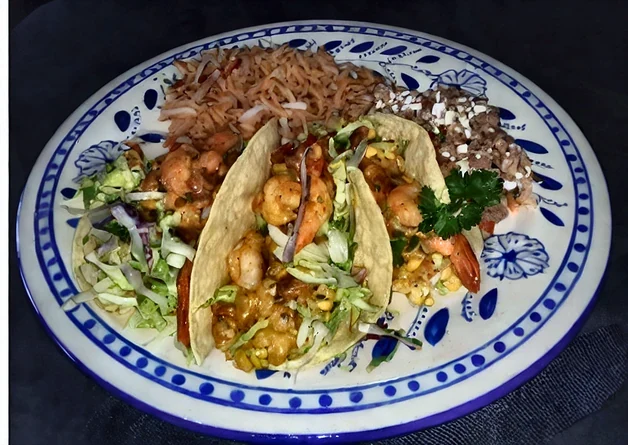
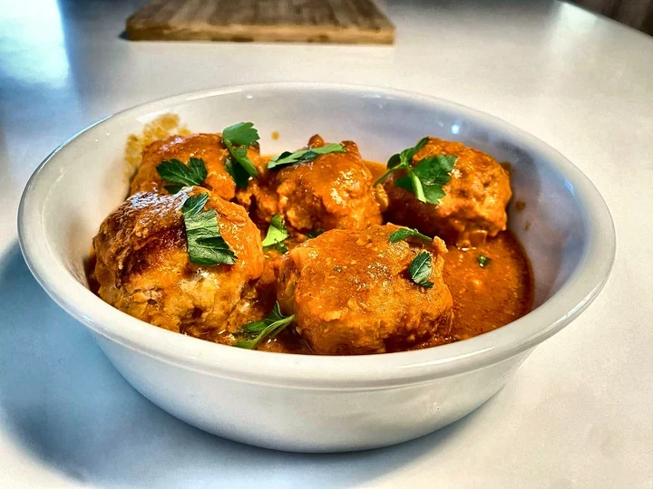
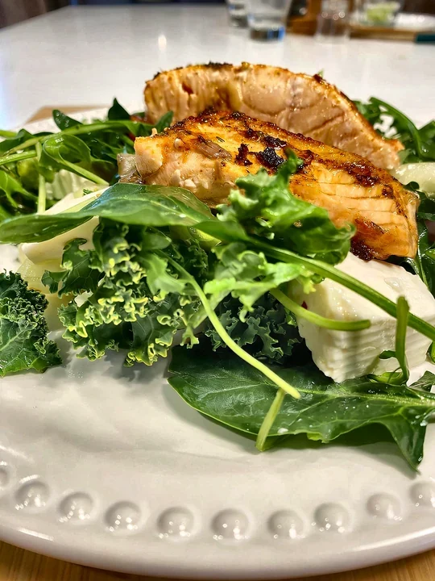
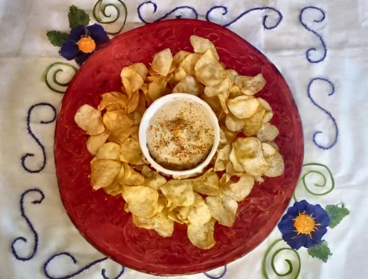
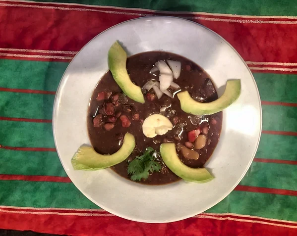
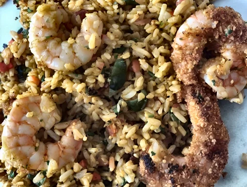
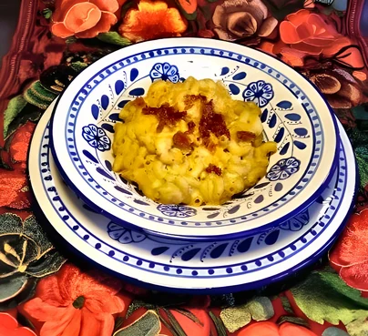
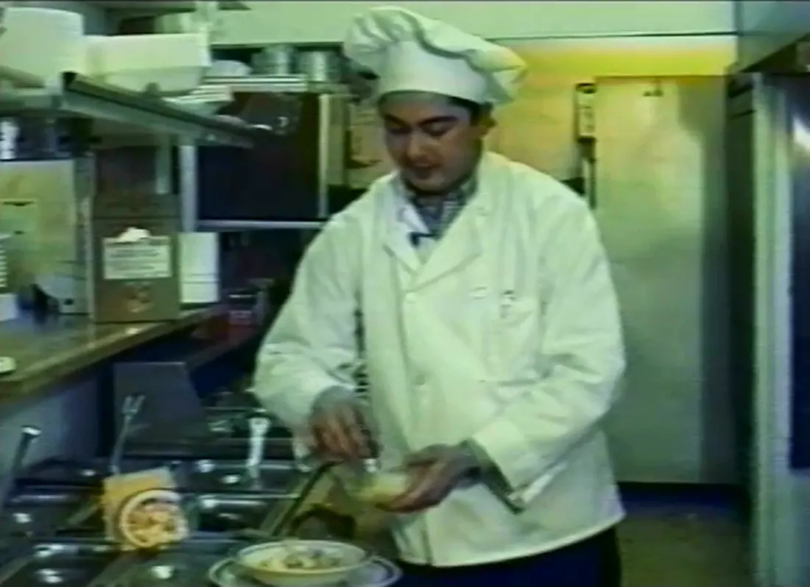

01From Mama Mecho
A family recipe, written down.
Great-grandmother Nemesia García — Mama Mecho — of Tlaxcala kept a tortilla soup in her cookbook. Generations later, it became Chololoy®.
Chololoy® Original Seasoning · Since 1990
A 100% natural Mexican seasoning with homemade flavor — easy, high-yield and versatile enough for any kitchen.
Serving U.S. restaurant kitchens since.
Reorder rate over the last 8 years.
of restaurants have served it — grown by word of mouth.
Swipe right — each pour tells the next beat.
Short recipe videos from the family kitchen. Tap any dish to watch it with sound.
Each card shows exactly how much Chololoy® goes in — ready for your line.
All recipesHover or tap a dish to see exactly how much Chololoy® goes in. Amounts from our tested recipes.

Seafood Michelada shrimp 2 tbsp. Blended into warm beer, poured over the shrimp.
Meats Meatballs in tomato sauce 1 tbsp. Seasons the meatball mix.
Seafood Salmon salad 1 tbsp. Mashed into butter and spread over the fish.
Dips Chololoy dip 1½ tbsp. Mixed straight in. Done.
Soups Black bean soup 1 tbsp. Puréed with the beans and water.
Rice Breaded shrimp & rice 2 tbsp. In the rice and on the shrimp.
Pasta Macaroni & cheese 2 tbsp. Whisked into the cheese sauce.“When people try it, they reorder.”The Hitchcock family, Chololoy®
One tablespoon in a cup of hot water. When it boils, the broth is ready — the same result on every shift.
About 52 tablespoons per pound, used one spoonful at a time.
Our great-grandmother’s recipe. 100% natural ingredients, no preservatives.
Our great-grandmother Nemesia García — Mama Mecho — of Tlaxcala wrote down a tortilla soup. Her great-grandson Victor Hitchcock Medina made it a dehydrated seasoning any restaurant could prepare in minutes, and in 1990 began showing Seattle’s Mexican kitchens how. He created demand where there wasn’t any.
Today his brother and sister, Patrick and Kristina, carry it on.

Watch Victor prepare the tortilla soup that started Chololoy — the same family recipe Kristina and Patrick still carry.
Sold by the case, direct from the family. Custom blends for large accounts on request; pricing quoted by volume and destination.
About 52 tablespoons in every pound. Choose the size that fits your kitchen.
Home kitchens
4 oz
Home kitchens · Restaurants
16 oz
Restaurants
12 lb
Yields are approximate, based on about 52 tablespoons per pound.
Samples for restaurants, distributors and stores. Tell us a little about your kitchen.
Recipes from our family kitchen and news about Chololoy®. No spam.
You can unsubscribe at any time.
By subscribing you agree to our Privacy Policy. Unsubscribe anytime.
Each case holds 12 one-pound, aluminum heat-sealed bags of Chololoy® Original Seasoning. The minimum order is 5 cases.
Wholesale cases: please allow 4 to 6 weeks for delivery. Freight varies by volume and distance.
For large clients, yes — from adjusting details like visible onion pieces to an exclusive blend based on our original. Volume and pricing are discussed directly.
Shelf life is one year. It’s 100% natural with no preservatives.
Home sizes are available by request — contact Kristina. For restaurant quantities, order wholesale cases.
Samples, orders, pricing or a custom blend — Kristina answers personally. Hablamos español.
kristina@chololoy.net(503) 703-7720